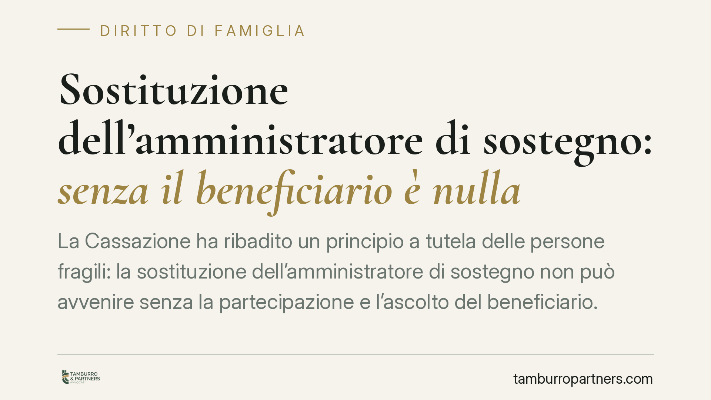

Sostituzione dell'amministratore di sostegno: senza il beneficiario è nulla
La Cassazione ha ribadito un principio a tutela delle persone fragili: la sostituzione dell'amministratore di sostegno non può avvenire senza la partecipazione e l'ascolto del beneficiario. La mancata audizione vizia il procedimento. Una lettura che estende alla fase di sostituzione le garanzie previste per la nomina, valorizzando il diritto della persona a essere ascoltata nelle decisioni che la riguardano.

Il caso
Un giudice tutelare sostituisce l'amministratore di sostegno di una figlia affetta da patologia psichiatrica, affidando l'incarico a un professionista in luogo del familiare. Il provvedimento viene contestato perché la beneficiaria non è stata sentita. Il tema è chiaro: la persona interessata può essere estromessa dalla decisione che riorganizza la propria protezione? La risposta della Corte è negativa.
> Nota redazionale. Gli estremi esatti della pronuncia (numero di ordinanza, sezione e data) sono in corso di verifica presso le fonti ufficiali: il principio qui esposto è consolidato, ma i riferimenti puntuali vanno confermati prima di ogni utilizzo processuale.
Inquadramento normativo
L'amministrazione di sostegno è disciplinata dagli artt. 404 e seguenti del Codice civile, introdotti dalla legge n. 6 del 2004. La ratio dell'istituto è una protezione "su misura": non un'incapacitazione generale, ma un sostegno calibrato sui bisogni concreti della persona, che conserva la capacità di agire per tutti gli atti non espressamente riservati all'amministratore.
In questo quadro l'ascolto del beneficiario non è un adempimento formale, ma il cardine del procedimento. L'art. 407 c.c. prevede che il giudice tutelare senta personalmente la persona cui il procedimento si riferisce, recandosi ove occorra nel luogo in cui si trova, e tenga conto dei suoi bisogni e delle sue richieste. Il riferimento alla sede precisa dell'obbligo di audizione personale all'interno dell'articolo va confermato sul testo vigente prima di ogni citazione tecnica.
Il passaggio interpretativo
Il punto di rilievo è l'estensione. La legge disciplina l'audizione nella fase di nomina, ma la Corte chiarisce che la stessa garanzia opera anche nella sostituzione dell'amministratore. La logica è coerente: se la persona deve essere ascoltata quando si decide chi la assiste, a maggior ragione deve esserlo quando quell'assetto viene cambiato. La sostituzione incide direttamente sul rapporto fiduciario e sulla vita quotidiana del beneficiario. Escluderlo significherebbe trattarlo come oggetto della decisione, non come titolare del diritto ad essere protetto.
Da qui la conseguenza processuale: la mancata audizione, quando dovuta, vizia il procedimento e travolge il provvedimento di sostituzione.
Implicazioni pratiche
Per le famiglie e per gli amministratori, il messaggio è concreto. Chi chiede o subisce una sostituzione ha diritto a un procedimento in cui il beneficiario sia effettivamente coinvolto. Non basta un provvedimento sulla carta: serve l'ascolto reale della persona.
Per il beneficiario, la decisione rafforza la posizione di chi si trova in condizione di fragilità: la sua voce entra nel procedimento anche quando, per patologia o difficoltà, potrebbe apparire più semplice deciderne le sorti senza di lui.
Per chi propone l'istanza di sostituzione, l'attenzione va posta sulla regolarità dell'iter: un vizio procedurale può rendere inutile l'intero percorso e imporre di ricominciare.
Cosa fare in concreto
- Verificate che l'audizione sia stata disposta. Controllate negli atti se il giudice tutelare ha sentito personalmente il beneficiario, anche recandosi presso di lui quando le condizioni lo richiedono.
- Documentate i bisogni della persona. Nell'istanza di sostituzione allegate elementi concreti su condizioni, esigenze e relazioni del beneficiario, così da facilitare un ascolto effettivo.
- Impugnate nei termini. Contro il decreto in materia di amministrazione di sostegno è ammesso reclamo ai sensi dell'art. 720-bis c.p.c., che rinvia agli artt. 739 e 740 c.p.c.; il termine è di norma di dieci giorni dalla comunicazione del provvedimento. Il termine e la decorrenza vanno verificati caso per caso sul provvedimento ricevuto.
- Conservate le comunicazioni. Annotate la data di comunicazione o notifica del decreto: da essa decorre il termine per il reclamo.
- Valutate la posizione con anticipo. Un esame preventivo della regolarità procedurale evita di scoprire il vizio solo a percorso concluso.
Conclusione
La sostituzione dell'amministratore di sostegno tocca l'organizzazione più intima della vita di una persona fragile. Pretendere che sia ascoltata non è un ostacolo burocratico: è il modo con cui l'ordinamento riconosce che quella persona resta protagonista delle scelte sul proprio sostegno. La forma, quando protegge un diritto, è sostanza.
Ogni famiglia ha il suo equilibrio.
Separazione, divorzio, affidamento, assegno: se vuoi un confronto riservato su una specifica situazione, scrivi allo studio. Ti rispondiamo entro un giorno lavorativo.